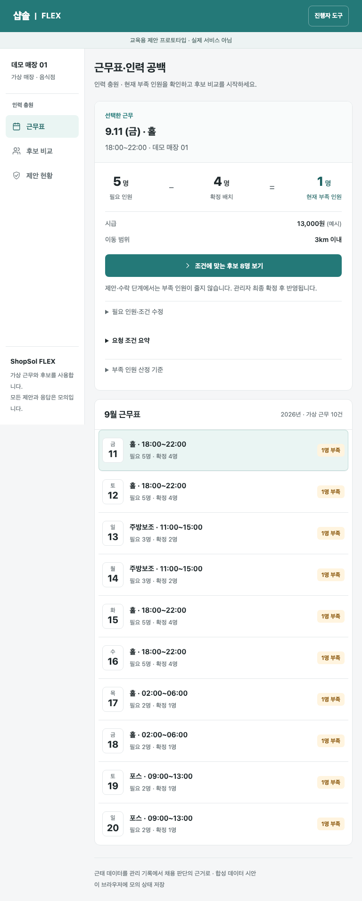

WESOP · 교육용 프로토타입
ShopSol FLEX
금요일 저녁, 한 명이 부족한 매장.
누구에게 제안하고 언제 확정할 수 있을까요?
근무 공백 확인부터 후보 비교, 제안, 모의 수락·준비 확인, 관리자 확정까지 연결했습니다. 제안과 확정의 차이를 화면에서 이해할 수 있는지 확인하는 시안입니다.
프로토타입 체험하기합성 데이터 사용. 실제 샵솔 연동·채용·AI 추천 없음.
사용자 테스트 참여자 0명, 사용자 가설 미검증.
